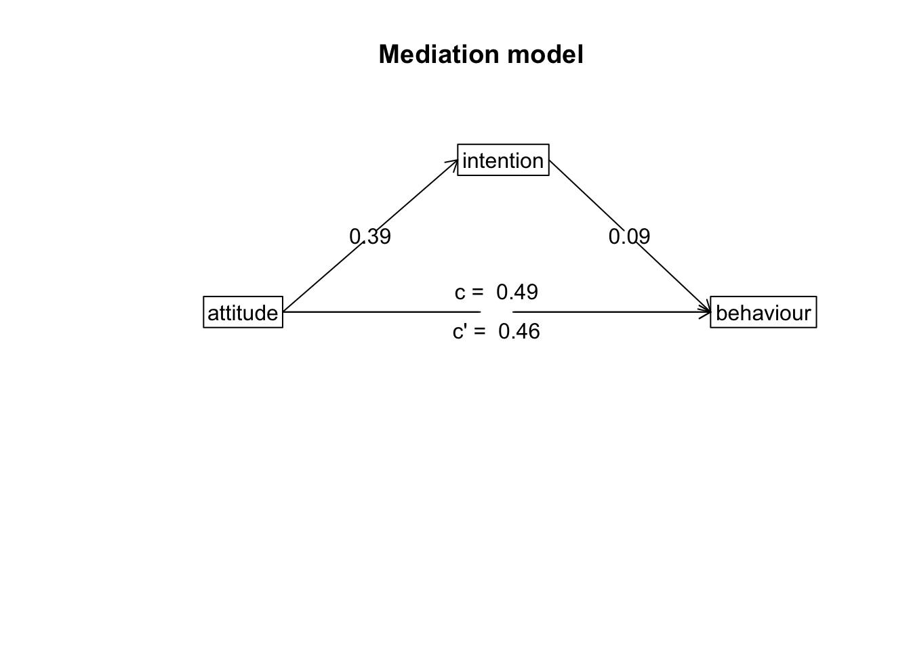

Content
Before we begin…
Remember, whenever we analyse data, we will roughly be following this procedure:
- Clean the data for analysis.
- Run the statistical test.
- Plot the data.
- Write-up analysis.
We will be using the following packages. If this is your first time using these packages, remember to install them before loading the packages.
library(tidyverse)
library(lm.beta)Reminder: Moderation (Interaction Effects)
As covered in the Lecture series, moderation is when the effect of an IV (predictor) on the DV (outcome) depends on another IV (predictor). We can test for an interaction effect in a linear regression.
In the example below, we will extend the regression we conducted last week and test the hypothesis that the association between sleep quality and stress is moderated by social support (for instance, the relationship between sleep quality and stress is more negative for participants low in social support).
Regression with Interaction Effect
1. Clean the data for analysis.
First we must calculate the scores for each scale in the analysis from the individual items. As we have done previously, we can do this by using the mutate() function. The code below is the same as the code we used last week. Remember to reverse code sleep quality so that higher scores indicate greater sleep quality.
data1.vars <- data %>%
mutate(stress = stress.1 + stress.2 + stress.3 + stress.4 + stress.5,
support = support.1 + support.2 + support.3 + support.4 + support.5,
sleep.quality = sleep1 + sleep2 + sleep3 + sleep4 + sleep5,
sleep.quality = sleep.quality * - 1) %>%
dplyr::select(student.no,stress,support,sleep.quality)When including interaction terms in a linear regression, including uncentered variables can be problematic. In order to center the variables, we can use the scale() function. The scale() function expects a numeric vector. There are two additional arguments called center and scale. If center is set to TRUE, but scale is set to FALSE, the scale() function will output the ‘centred’ variable. If both arguments are set to TRUE, the scale() function will return a ‘standardised’ argument.
Because of a quirk with the scale() function, we also need to tell R that the output is a vector. We can do this by wrapping the results from the scale() function inside a c() function.
You can see the scale() function in action below:
v <- c(3,32,5,6,12,59,96)
#Get the centered variable.
c.v <- c(scale(v,center = TRUE,scale = FALSE))
c.v## [1] -27.428571 1.571429 -25.428571 -24.428571 -18.428571 28.571429 65.571429#Get the standardised variable.
z.v <- scale(v, center = TRUE,scale = TRUE) %>% as.vector()
z.v## [1] -0.7782022 0.0445845 -0.7214583 -0.6930863 -0.5228546 0.8106273 1.8603896We can use this combination of the scale() and c() functions within the mutate() to calculate the standardised/centred variables of columns in our data.frame:
#Compute centred variables for analysis.
data1.clean <- mutate(data1.vars,
c.stress = c(scale(stress,center = TRUE,scale = FALSE)),
c.support = c(scale(support,center = TRUE,scale = FALSE))) %>%
#Compute standardised variables.
mutate(z.sleep.quality = c(scale(sleep.quality,center = TRUE,scale = TRUE)),
z.support = c(scale(support,center = TRUE,scale = TRUE)),
z.stress = c(scale(stress,center = TRUE,scale = TRUE)))2. Run statistical test
Recall that interaction effects are the multiplication of the two variable. Therefore, to specify an interaction, we change the formula we specify to include the multiplication of the variable whose interaction we are interested in. For the unstandardised model, make sure you include the centred variables in the formula.
#Unstandardised Model
model1 <- lm(sleep.quality ~ c.stress*c.support,data = data1.clean)
summary(model1)##
## Call:
## lm(formula = sleep.quality ~ c.stress * c.support, data = data1.clean)
##
## Residuals:
## Min 1Q Median 3Q Max
## -11.9303 -2.9800 0.5636 2.9478 8.7012
##
## Coefficients:
## Estimate Std. Error t value Pr(>|t|)
## (Intercept) -13.08190 0.42042 -31.117 < 2e-16 ***
## c.stress -0.67418 0.21034 -3.205 0.00175 **
## c.support 0.20154 0.06872 2.933 0.00407 **
## c.stress:c.support 0.10810 0.03342 3.235 0.00160 **
## ---
## Signif. codes: 0 '***' 0.001 '**' 0.01 '*' 0.05 '.' 0.1 ' ' 1
##
## Residual standard error: 4.534 on 113 degrees of freedom
## (1 observation deleted due to missingness)
## Multiple R-squared: 0.1955, Adjusted R-squared: 0.1742
## F-statistic: 9.154 on 3 and 113 DF, p-value: 1.793e-05Notice how R automatically includes the main effects in the model? In most cases, you will want to include the separate main effects when including an interaction term, but in the odd occassion when you want to include the interaction effect without the main effect, you can specify it using the : symbol. In other words:
sleep.quality ~ stress*support is identical to sleep.quality ~ stress + support + stress:support
Above are the unstandardised coefficients. However, in order to report in APA format, we require the standardised coefficient. Similar to with an ordinary regression, we can use the lm.beta() function to get the standardised coefficients, like here:
#Standardised Model
model1 %>%
lm.beta() %>%
summary()##
## Call:
## lm(formula = sleep.quality ~ c.stress * c.support, data = data1.clean)
##
## Residuals:
## Min 1Q Median 3Q Max
## -11.9303 -2.9800 0.5636 2.9478 8.7012
##
## Coefficients:
## Estimate Standardized Std. Error t value Pr(>|t|)
## (Intercept) -13.08190 0.00000 0.42042 -31.117 < 2e-16 ***
## c.stress -0.67418 -0.27148 0.21034 -3.205 0.00175 **
## c.support 0.20154 0.24826 0.06872 2.933 0.00407 **
## c.stress:c.support 0.10810 0.27313 0.03342 3.235 0.00160 **
## ---
## Signif. codes: 0 '***' 0.001 '**' 0.01 '*' 0.05 '.' 0.1 ' ' 1
##
## Residual standard error: 4.534 on 113 degrees of freedom
## (1 observation deleted due to missingness)
## Multiple R-squared: 0.1955, Adjusted R-squared: 0.1742
## F-statistic: 9.154 on 3 and 113 DF, p-value: 1.793e-053. Plot data
Interactions can often be difficult to intuit from just looking at the numbers in the model. Therefore, it is almost always necessary to plot them. The most common way to plot an interaction is to split the dataset in two according to the moderator: one with participants who score above the mean on the moderator, and the other with participants who score below the mean on the moderator. In our example, this means splitting the data into participants who are above and below the mean in social support. We can do this by creating a new variable using the ifelse() function within the mutate() function.
The ifelse() function works by first specify a condition as the first argument. The second argument is what happens if data from a participant meets that condition. The third arguement is what happens if a participant does not meet that condition. So in the code below, we are creating a new variable called ‘cat.support’. We want to categorise support into two levels, so the condition in the ifelse() function is z.support > 0. Since we standardised the moderator during the cleaning scale. The mean for support equals 0, so we can split the data on this. Participants who meet this condition are in the “high support” group, while those that are not are in the “low support” group.
plot.data <- mutate(data1.clean,cat.support = ifelse(z.support > 0,"high support","low support")) %>%
filter(!is.na(cat.support))We then can plot the regression line adding in a ‘group’ and ‘colour’ aesthetic to separate our data of participants with high and low support.
ggplot(plot.data,mapping = aes(x = stress,y = sleep.quality,group = cat.support,colour = cat.support)) +
geom_smooth(method = "lm") +
theme_classic()
Even better is if can visualise the raw data in a scatterplot:
ggplot(plot.data,mapping = aes(x = stress,y = sleep.quality,group = cat.support,colour = cat.support)) +
geom_smooth(method = "lm") +
geom_point() +
theme_classic()
4. Write-up analysis.
Given that a moderation is exactly the same as a regression, we require the same information to do the write-up. As a reminder, here are the components you need to write up a regression:
For the model, you need the following information:
- the R-squared statistic.
- the F-statistic and associated degrees of freedom.
- the p-value for the model.
For each predictor, you need the following information:
- the standardised coefficient.
- the t-statistic.
- the p-value for that coefficient.
As mentioned last week, with more than one predictor in the model, it may make more sense to report the statistics in a table. This includes models with interaction effects (in the case above, the interaction effect is our third predictor).
Here is an example of the write-up:
We used a linear regression to predict sleep quality from the level of perceived stress, level of social support, and the interaction between the two. We found that model explained 19.55% of the variance (F(3,113) = 9.15, p = 0). Regression coefficients are reported in Table 1. There was a significant, negative main effect of stress on sleep quality. There was a significant, positive main effect of social support on sleep quality. The interaction between perceived stress and social support was significant, such that… [go on to describe the pattern of results]
Table 1. Regression coefficients for linear model predicting stress.
| predictor | beta | t | p-value |
|---|---|---|---|
| Perceived Stress | -0.27 | -3.21 | 0.002 |
| Social Support | 0.25 | 2.93 | 0.004 |
| PS * SS | 0.27 | 3.23 | 0.002 |
Two-Way Between-Subjects ANOVA
A two-way ANOVA is used when you want to evaluate the effects of two categorical IVs on a continuous DV. Much of what we have covered regarding a linear regression with multiple predictors applies with a two-way ANOVA, but with two categorical IVs. In the example below, we will test whether there is an association between between introversion and identifying as either a cat- or dog-person, and whether this association differs depending on whether you play video-games or not.
1. Clean the data for analysis.
clean.data2 <- data %>%
filter(cat.dog != "both") %>%
filter(cat.dog != "neither") %>%
filter(cat.dog != "") %>%
mutate( introvert = introversion2 + introversion5 + introversion7 + introversion8 + introversion10,
introvert = (introvert * -1) + 6*6 ) %>%
select(introvert,video.games,cat.dog)2. Run statistical test
The function to run a two-way ANOVA is the same as a one-way ANOVA: aov(). R is smart enough to determine which statistical test to run based on how many IVs are in the formula. The formula works the same as an interaction in a regression, where both categorical IVs are “multiplied” together. R will automatically include the main effects for each IV and the interaction. Also, similar to the one-way ANOVA, in order to get output that is interpretable, you can pipe the result to the summary() function.
aov(introvert ~ cat.dog*video.games,data = clean.data2) %>%
summary()## Df Sum Sq Mean Sq F value Pr(>F)
## cat.dog 1 59.8 59.83 3.970 0.0505 .
## video.games 1 2.9 2.89 0.191 0.6631
## cat.dog:video.games 1 53.6 53.60 3.557 0.0638 .
## Residuals 65 979.5 15.07
## ---
## Signif. codes: 0 '***' 0.001 '**' 0.01 '*' 0.05 '.' 0.1 ' ' 1Similar to a one-way ANOVA, the two-way ANOVA will tell you whether or not there is a difference, but it will not tell you where that difference is. In order to determine this, you will need to calculate summary statistics (e.g., means for each cell) and conduct follow-up comparisons.
Calculate Summary Statistics
clean.data2 %>%
group_by(video.games,cat.dog) %>%
summarise(
count = n(),
mean = mean(introvert,na.rm = TRUE),
sd = sd(introvert,na.rm = TRUE)
)## # A tibble: 4 x 5
## # Groups: video.games [2]
## video.games cat.dog count mean sd
## <chr> <chr> <int> <dbl> <dbl>
## 1 No cat 12 22 4.26
## 2 No dog 24 18.2 3.52
## 3 Yes cat 10 19 3.43
## 4 Yes dog 23 19.0 4.20Multiple Comparisons
In the ANOVA table above, we do not find a significant interaction between playing video games and being a cat or dog person. However, we will conduct the comparisons below to determine as if there were a significant interaction. To assess the significant interaction, we test whether the difference between cat-people and dog-people differs depending on whether they play video-games or not.
t.test(introvert ~ cat.dog,data = filter(clean.data2,video.games == "Yes" & (cat.dog == "cat" | cat.dog == "dog")))##
## Welch Two Sample t-test
##
## data: introvert by cat.dog
## t = -0.031164, df = 20.934, p-value = 0.9754
## alternative hypothesis: true difference in means between group cat and group dog is not equal to 0
## 95 percent confidence interval:
## -2.945428 2.858472
## sample estimates:
## mean in group cat mean in group dog
## 19.00000 19.04348t.test(introvert ~ cat.dog,data = filter(clean.data2,video.games == "No" & (cat.dog == "cat" | cat.dog == "dog")))##
## Welch Two Sample t-test
##
## data: introvert by cat.dog
## t = 2.6316, df = 18.72, p-value = 0.01657
## alternative hypothesis: true difference in means between group cat and group dog is not equal to 0
## 95 percent confidence interval:
## 0.7644781 6.7355219
## sample estimates:
## mean in group cat mean in group dog
## 22.00 18.253. Plot data
When plotting the data, we want to visualise the relationship between introversion and cat-people/dog-people separated by the moderator - whether participants play video-games or not. We can do this by adding a facet_wrap() to our standard violin plot. Here, we only need to specify which variable to separate the plot on.
ggplot(clean.data2,aes(x = cat.dog,y = introvert,fill = video.games)) +
geom_violin() +
stat_summary() +
facet_wrap(~ video.games) +
theme_classic() +
theme(legend.position = "none")
Mediation
As covered in the Lecture series, mediation describes a relationship where the influence of one variable on another can be explained through a third variable. In the example below, we will test whether the relationship between attitudes towards exercise and exercise behaviour can be explained through intentions to exercise (i.e., individuals who have positive attitudes about exercise increase their intention to exercise, which in turn increases exercise behaviour). For more information on these scales (and some of the ones we will use later), see this paper: https://search.proquest.com/docview/202682863. Note, we only use the first 5-items on each scale to keep things simple.
1. Clean data for analysis.
First, we must calculate the variables that we need for our analysis. This process should be fairly familiar by now.
data.clean <- data %>%
mutate(attitude = exercise.attitude.1 + exercise.attitude.2 + exercise.attitude.3 + exercise.attitude.4 + exercise.attitude.5,
intention = exercise.intention.1 + exercise.intention.2 + exercise.intention.3 + exercise.intention.4 + exercise.intention.5,
behaviour = exercise.behaviour.1 + exercise.behaviour.2 + exercise.behaviour.3 + exercise.behaviour.4 + exercise.behaviour.5) %>%
dplyr::select(student.no,attitude,intention,behaviour) %>%
filter(!is.na(attitude)) %>%
filter(!is.na(intention)) %>%
filter(!is.na(behaviour))2. Run statistical test
Remember, mediation is when the effect of one IV could be explained through a third variable (mediation). If there is an effect in a model without the mediator, but that effect is reduced (or disappears) when the mediator is included, there is a chance the mediation is happening. In order to check whether our variables meet these conditions, we need to conduct a number of linear regressions.
Model 1
Here, we test whether there is an association between the predictor (attitudes) and the outcome variable (behaviour):
lm(behaviour ~ attitude,data = data.clean) %>%
lm.beta() %>%
summary()##
## Call:
## lm(formula = behaviour ~ attitude, data = data.clean)
##
## Residuals:
## Min 1Q Median 3Q Max
## -18.5329 -3.9424 -0.7851 4.6244 13.8529
##
## Coefficients:
## Estimate Standardized Std. Error t value Pr(>|t|)
## (Intercept) 8.9898 0.0000 1.0318 8.713 2.56e-14 ***
## attitude 0.7953 0.4949 0.1302 6.108 1.41e-08 ***
## ---
## Signif. codes: 0 '***' 0.001 '**' 0.01 '*' 0.05 '.' 0.1 ' ' 1
##
## Residual standard error: 6.375 on 115 degrees of freedom
## Multiple R-squared: 0.2449, Adjusted R-squared: 0.2384
## F-statistic: 37.3 on 1 and 115 DF, p-value: 1.411e-08Model 2
Here, we test whether including the mediator (intention) in the model changes the relationship between the predictor (attitude) and the outcome variable (behaviour):
lm(behaviour ~ attitude + intention,data = data.clean) %>%
lm.beta() %>%
summary()##
## Call:
## lm(formula = behaviour ~ attitude + intention, data = data.clean)
##
## Residuals:
## Min 1Q Median 3Q Max
## -19.0286 -3.8251 -0.8251 4.7210 13.5488
##
## Coefficients:
## Estimate Standardized Std. Error t value Pr(>|t|)
## (Intercept) 8.71897 0.00000 1.06121 8.216 3.70e-13 ***
## attitude 0.73563 0.45780 0.14137 5.204 8.73e-07 ***
## intention 0.12351 0.09489 0.11451 1.079 0.283
## ---
## Signif. codes: 0 '***' 0.001 '**' 0.01 '*' 0.05 '.' 0.1 ' ' 1
##
## Residual standard error: 6.371 on 114 degrees of freedom
## Multiple R-squared: 0.2526, Adjusted R-squared: 0.2394
## F-statistic: 19.26 on 2 and 114 DF, p-value: 6.223e-08Model 3
Also, in order for there to be a mediation, we must observe a relationship between the predictor (attitude) and the mediator (intention):
lm(intention ~ attitude,data = data.clean) %>%
lm.beta() %>%
summary()##
## Call:
## lm(formula = intention ~ attitude, data = data.clean)
##
## Residuals:
## Min 1Q Median 3Q Max
## -14.297 -2.642 0.324 3.014 9.910
##
## Coefficients:
## Estimate Standardized Std. Error t value Pr(>|t|)
## (Intercept) 2.1932 0.0000 0.8397 2.612 0.0102 *
## attitude 0.4828 0.3910 0.1060 4.556 1.31e-05 ***
## ---
## Signif. codes: 0 '***' 0.001 '**' 0.01 '*' 0.05 '.' 0.1 ' ' 1
##
## Residual standard error: 5.188 on 115 degrees of freedom
## Multiple R-squared: 0.1529, Adjusted R-squared: 0.1455
## F-statistic: 20.76 on 1 and 115 DF, p-value: 1.306e-05Mediation Analysis
While we may or may not meet the conditions for a mediation above, we will continue with the analysis to demonstrate the process of conducting a mediation analysis regardless.
In order to conduct a mediation analysis in R, we will load the psych package. If you haven’t installed the psych package yet, make sure to do this before loading the psych package.
library(psych)The function that runs the mediation analysis is aptly named mediate(). Like all analysis functions, the mediate() function accepts a formula and a data.frame, but also a couple of options that we will want to change. For the formula, the mediate function takes a specific form, where the mediator is put inside brackets on the right-hand side of the ~ symbol:
DV ~ IV + (Mediator)So for our analysis, the code becomes the following. Note, we also want to set the ‘std’ argument to TRUE to ensure we receive standardised estimates, and the ‘plot’ argument to FALSE so we are only seeing the numeric output (we will see the plot later).
model <- mediate(behaviour ~ attitude + (intention),data = data.clean,std = TRUE,plot = FALSE)
model##
## Mediation/Moderation Analysis
## Call: mediate(y = behaviour ~ attitude + (intention), data = data.clean,
## std = TRUE, plot = FALSE)
##
## The DV (Y) was behaviour . The IV (X) was attitude . The mediating variable(s) = intention .
##
## Total effect(c) of attitude on behaviour = 0.49 S.E. = 0.08 t = 6.11 df= 115 with p = 1.4e-08
## Direct effect (c') of attitude on behaviour removing intention = 0.46 S.E. = 0.09 t = 5.2 df= 114 with p = 8.7e-07
## Indirect effect (ab) of attitude on behaviour through intention = 0.04
## Mean bootstrapped indirect effect = 0.04 with standard error = 0.04 Lower CI = -0.03 Upper CI = 0.12
## R = 0.5 R2 = 0.25 F = 19.26 on 2 and 114 DF p-value: 3.58e-10
##
## To see the longer output, specify short = FALSE in the print statement or ask for the summaryMost of the information above is what we have encountered previously. The main information we are interested in this output is the line on the mean bootstrapped indirect effect. A large indirect effect (and consequently a greater drop between the total effect and the direct effect) would indicate that mediation is occurring. Since we are bootstrapping, we can tell the significance through confidence intervals. If the range between the lower CI and the upper CI contains zero, then the indirect effect is not significant. If this range does not contain zero, then we have a significant mediation effect.
3. Plot data
Path Diagram
For mediation, there’s no good way to plot the raw data that visualises the mediation. The most common way to visualise a mediated effect is through a path diagram. You can do this directly in the mediate() function by setting the ‘plot’ argument to TRUE or use the mediate.diagram() like below:
mediate.diagram(model)
4. Write-up analysis.
There are several things you need to include when writing up a mediation analysis. Writing up a mediation analysis includes the write-up for each individual models with and without the mediator (Model 1 and Model 2 above - these numbers are also included in the output for the mediate() function), and also the estimated indirect effect and associated confidence intervals. Usually, you would want to accompany the write-up with a path diagram such as the one above.
In the model where attitudes towards exercise predicted variance in exercise behaviour, the effect of exercise attitudes was not significant (beta = 0.49, p = 0). When including intention to exercise into the model, the effect of attitudes on behaviour did not change (beta = 0.46, p = 0). Mediation analysis revealled a non-significant indirect effect of intentions to exercise on the association between attitudes towards exercise and exercise behaviour (mean bootstrapped indirect effect = 0.46, 95% CI = -0.03, 0.12).
Note: While we report the results in text above, it is sometimes also easier to report the separate models in a table.